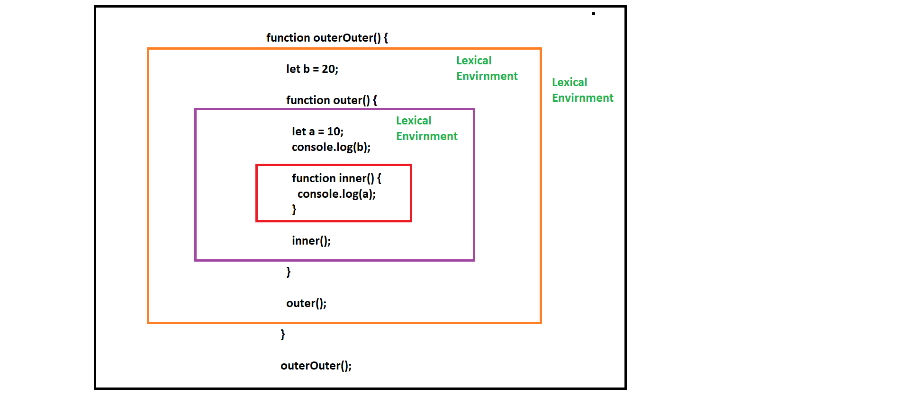

Function is the Heart of JavaScript
A function Bundled together with its lexical environment makes a Closure.
A closure is the combination of a function bundled together (enclosed) with references to its surrounding state (the lexical environment)
lexical environment A lexical environment in JavaScript is a data structure that stores the variables and functions that are defined in the current scope and all of the outer scopes
